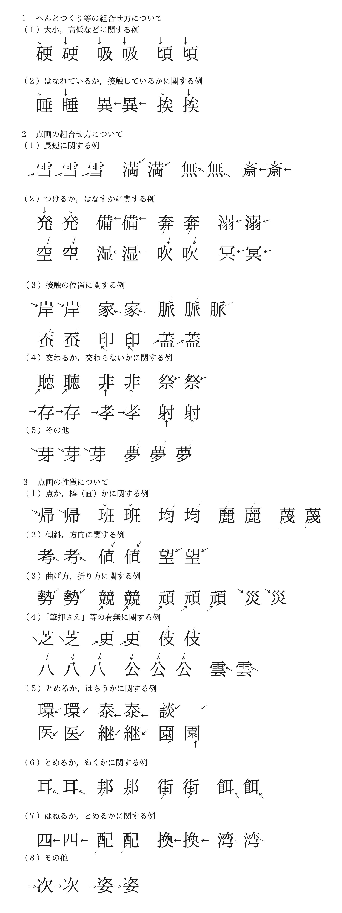
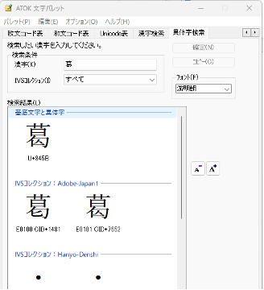
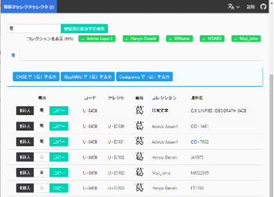

クリックすると解説が表示されます
- 【常用漢字表】
- 常用漢字を示した表。漢字の字体、音訓、語例を示した「本表」と、当て字や熟字訓を示した「付表」からなる。1981年告示、2010年改定。
- 【常用漢字】
-
「常用漢字表」にあげられた漢字。一般の社会生活で漢字を使用する際の目安として示されている。方針や採用字種の検討などは文化審議会が行う。1981年、それまでの「当用漢字表」に新たに95字が追加され、1,945字として告示。さらに2010年11月30日に196字を追加、5字を削除した2,136字の「改定常用漢字表」が告示された。
［補足１］
常用漢字表の解説「表の見方及び使い方」に「漢字欄に字種と字体を示した。」「字体は文字の骨組みであるが、便宜上、明朝体のうちの一種を例に用いて「印刷文字における現代の通用字体」を示した。」とあります。
常用漢字表に示された字体は「通用字体」だということです。
［補足２］
2010年に追加された196字は、それ以前は表外字でした。この時期ともなると、それぞれの字種で用いられている印刷字体が通用字体として通行していたため、常用漢字の他の字体に寄せることなく新常用漢字として採録されました。（例示の右が追加された常用漢字）
例「歩・渉－捗」「芽－牙」「臭－嗅」「謹－僅」「具－俱」「者－箸」「尚－蔽」など
- 【表外字】
-
常用漢字表にない漢字。表外漢字。外字。
※『大辞泉』では表外字の場合、漢字の前に「×」が示されています。但し、固有名詞には表外字であっても表記記号は示されていません。
かもめ【×鴎】 もり-おうがい【森鴎外】
- 【表外音訓】
-
常用漢字表に記載されていない字音と字訓。
［補足］
表外字にルビを振るという指定の場合、表外音訓もその対象となります。
常用漢字表の「剝」の音訓欄は「ハク はがす はぐ はがれる はげる」となっています。「剝がす」や「剝奪」の場合はルビ振りの対象外ですが、「剝（む）く」の場合は表外訓であるため、ルビを振る対象となります。
※『大辞泉』では表外字の場合、漢字の前に「▽」が示されています。
む・く 【▽剝く】
- 【付表】
-
ここでは「常用漢字表」本表のあとにある表を指します。
常用漢字表の解説「表の見方及び使い方」に「「付表」には、いわゆる当て字や熟字訓など、主として１字１字の音訓としては挙げにくいものを語の形で掲げた。便宜上、その読み方を平仮名で示し、五十音順に並べた。」とあります。
［補足］
「付表」には「常用漢字表」本表の「備考」欄に載る言葉が集められています。
例 「明日」「小豆」「海女」「海士」「硫黄」「意気地」「田舎」「お巡りさん」「父さん」「母さん」「兄さん」「姉さん」「差し支える」など。
例えば、「支」の音訓欄は「シ
ささえる」で、備考欄に「差し支える（さしつかえる）」が掲載されています。「つかえる」は「主として１字１字の音訓としては挙げにくいもの」とされ、「支」の訓としては掲載されず、備考欄で扱われました。
※『大辞泉』で「さしつかえる」は常用漢字表内の訓として扱われます。
- 【熟字訓】
-
2字以上の漢字からなる熟字を訓読みすること。「昨日（きのう）」「大人（おとな）」「五月雨（さみだれ）」など。
［補足］
先に示した「付表」に掲載される言葉のうち「明日」「小豆」「海女」「海士」「硫黄」「田舎」などが熟字訓です。
※『大辞泉』では付表に掲載される熟字訓には「－」の記号が、付表に掲載されない熟字訓には「＝」の記号が付されています。
あす【明－日】 あした【明＝日】
但し、熟字訓記号「－」の前後の漢字は常用漢字ですが、「＝」のついた熟語の場合、記号の前後の漢字が常用漢字か表外字かはわからなくなります。
いちじく 【無＝花＝果】 あすなろ【翌＝檜】
この場合、「無・花・果・翌」は常用漢字、「檜」は表外字です。表外字かどうかを調べる場合は単漢字で検索して確かめてください。
- 【いわゆる康熙字典体】＝【旧字体】
-
「常用漢字表」の通用字体の横に（ ）で示された漢字のことです。
常用漢字表の解説「表の見方及び使い方」に「丸括弧に入れて添えたものは、いわゆる康熙字典体である。これは、明治以来行われてきた活字の字体とのつながりを示すために参考として添えたものであるが、著しい差異のないものは省いた。」とあります。
- 【旧字体】
-
常用漢字表で示された字体に対して、そのもとの字。「沢」に対する「澤」、「竜」に対する「龍」など。
［補足１］
康熙字典体ではない字体が含まれているため「いわゆる」という冠が付いています。説明で用いる場合は「康熙字典体」ではなく「旧字体」という方がわかりやすいでしょう。その場合、通用字体は「新字体」と呼ぶことができます。
［補足２］
旧字体は、常用漢字表の362の字種に示されています。「弁」には３つ「辨 瓣 辯」の旧字体が示されていますので、旧字体の総数は364字となります。
※この364字は表外字として扱われます。
- 【許容字体】
-
狭義には、「常用漢字表」の通用字体の横に［ ］で示された漢字のことです。
常用漢字表の解説「表の見方及び使い方」に「「しんにゅう／しょくへん」に関係する字のうち、「辶／𩙿」の字形が通用字体である字については、「辶／飠」の字形を角括弧に入れて許容字体として併せ示した。当該の字に関して、現に印刷文字として許容字体を用いている場合、通用字体である「辶／𩙿」の字形に改める必要はない。これを「字体の許容」と呼ぶ。」とあります。
広義には、表外字においても上記のように変更された字体のことを指します。
［補足］
［ ］で示された字体は５つ。（以下の右の字体が許容字体）
「餌－餌󠄀」「餅－餅󠄀」「遡－遡󠄀」「遜－遜󠄀」「謎－謎󠄀」
※許容字体は常用漢字として扱われます。
- 【教育漢字】 【学習漢字】
-
義務教育で習う常用漢字のうち、小学校6か年の間に学習することが必要であるとして、学習指導要領の「学年別漢字配当表」に示された漢字の通称。2017年に1,026字となった。
- 【学年別漢字配当表】
-
小学校学習指導要領で、児童の学習する漢字を学年別に示した表。2017年告示の学習指導要領改訂で、第1学年80字、第2学年160字、第3学年200字、第4学年202字、第5学年193字、第6学年191字の計1,026字となっている。
- 【音訓の小・中・高等学校段階別割り振り表】
-
常用漢字の音訓及び付表の語について、小学校、中学校及び高等学校等の学校段階ごとの割り振りを示すもの。2010年に改定された「常用漢字表」に伴って補訂されたものを、2017年の学年別漢字配当表の改定に伴って変更された。
https://www.mext.go.jp/a_menu/shotou/new-cs/__icsFiles/afieldfile/2017/05/15/1385768.pdf
- 【字種】
-
特に漢字で異なる文字と認められる１つ１つの文字。
［補説］漢字の場合、標準的な文字についてその種類を数える。異体字等については字種に含めることもあるが、楷書・行書・草書などの筆記体や、明朝体・宋朝体・ゴシックなどの活字体の違いは、ふつう字種の違いとはしない。
［補足］
例えば、「弁・辨・瓣・辯」は１つの字種で複数の字体があると表現します。
- 【字体】
-
一点一画の組み合わせからなる文字の形。定型化された点画の組み合わせ。１つの字でも、字画数の違いによって、正字・俗字・新字・旧字などと区別する。
- 【字形】
-
点や線の集まりで構成された文字の形。
［補足］
「字体」は、文字を文字として成り立たせている骨組みのことです。同じ文字としてみなすことができる無数の字の形それぞれから抜き出せる、形の上での共通した特徴です。書かれた、または印刷された文字が、社会的に通用するかどうかは、その文字にその文字としての字体が認められるかによって決まります。文字の細部に違いがあっても、字体の枠組みから外れていなければ、その文字として認められます。
「字形」は、字体が具現化され、実際に表された１つ１つの字の形のことです。字形は、手書きされた文字の数だけ、印刷文字の種類だけ、存在するとも言えます。字体は、さまざまな字形として具現化されます。
- 【活字体】【活字書体】
-
活字として、印刷を前提にデザインされた書体。和文には明朝体・ゴシック体・アンチック体など、欧文にはローマン体・イタリック体・ゴシック体・スクリプト体などがある。
- 【書体】
-
字体を基本とした文字の体裁。漢字の楷書・行書・草書・篆書・隷書など。活字では、明朝体・清朝体・宋朝体などや、欧文でのローマン・イタリックなど。
- 【フォント】
-
活字で、同一の書体・大きさの、大文字・小文字・数字・記号などの一揃い。または、コンピューターで使われる書体データのこと。
- 【正字】
-
略字・俗字などに対して、正式の字。また、当用漢字・常用漢字の新字体に対して、そのもとの字。「円」に対する「圓」、「当」に対する「當」の類。
- 【親字】
-
漢和辞典で、部首ごとに画数順に配列されている見出しの漢字。親文字。
［補足］
常用漢字の場合は通用字体が、表外字の場合は主に康熙字典体が親字となります。
- 【異体字】
-
標準の字体（親字）とは異なるが、意味・発音が同じで、通用する漢字。「煙」に対する「烟」、「群」に対する「羣」など。
［補足］
「異体字」には「本字」「或体字」「古字」「同字」「俗字」の種類があります。（『新選漢和辞典』凡例P.9参照）
- 【人名用漢字】
-
戸籍上の人名に用いることができるとして、常用漢字以外に定められた863の漢字。（中略）世間の要望などを採り入れて順次追加・調整されている。
［補説］
2004年、それまでの290字に許容字体（人名用漢字の異体字）205字と新たな488字が加えられて大幅に増加。また、2010年の常用漢字表改定時には、129字が常用漢字へと移行し、5字が常用漢字から移行した。
［補足１］
【人名に用いることができる文字】は以下のものからなります。
［漢字］2,999字
常用漢字（2,136字）＋常用漢字表掲載の旧字体（204字）+人名用漢字別表第二の二に掲載された人名に使える常用漢字の異体字（8字）
人名用漢字別表第二の一（633字）＋その康熙字典体もしくは異体字（18字）
［その他：漢字以外の文字］173字
平仮名・片仮名（169字）＋記号（4字）：々 ゝ ゞ ー
［補足２］
人名用漢字「863字」とは、常用漢字の旧字体（204字）+人名用漢字別表第二の二に掲載された人名に使える常用漢字の異体字（8字）+人名用漢字別表第二の一（633字）+その康熙字典体もしくは異体字（18字）を合計した数のことです。人名用漢字が「人名に用いることができる文字」全体を表しているわけではありません。
［補足３］
常用漢字の旧字体は364字ありますが、このすべてが人名に使えるわけではありません。「亞（亜）」「惡（悪）」など204文字に限定されていて、「壓（圧）」「醫（医）」「驛（駅）」など160字は人名には使えません。
それとは別に、常用漢字表に旧字体として掲載されていない常用漢字の異体字8字が人名に使えるようになっています。
駈（駆）・薗（園）・嶋（島）・盃（杯）・冨（富）・峯（峰）・埜（野）・凉（涼）
※（ ）の中が常用漢字、その左が異体字で、表外字扱いとなる漢字です。
- 【表外漢字字体表】
-
国語審議会が2000年に答申した字体表に掲載されている、1,022字の表外字についての字体表。印刷物などでの字体選択のよりどころとなるよう作成されたもので、手書きの文字は対象とされません。
但し、この中の154文字は2010年に常用漢字に追加され「表外字」ではなくなりました。
- 【印刷標準字体】
-
「表外漢字字体表」に掲載されている1,022字（実際には、常用漢字に移行した154字を除く868字）の表外字の字体。印刷物などでの字体選択のよりどころとなるよう作成されたもので、手書きの文字は対象とされません。
- 【簡易慣用字体】
-
上記「印刷標準字体」として挙げられた868の漢字の中で、常用漢字字体に倣って簡略化された字体、及び慣用的に使われている俗字体などのうち、現在の文字生活の中で十分に定着していると判断でき、かつ、印刷標準字体と入れ替えて使用しても基本的には支障のない19の印刷文字字体のことです。
※以下では 印刷標準字体（簡易慣用字体）という関係。
啞（唖）・蘆（芦）・穎（頴）・鷗（鴎）・攪（撹）・
嚙（噛）・鹼（鹸）・麴（麹）・繡（繍）・蔣（蒋）・
醬（醤）・搔（掻）・禱（祷）・枡（桝）・蠟（蝋）・
屛（屏）・幷（并）・彎（弯）・濾（沪）
※「嚙む－噛む」「石鹼－石鹸」「刺繡－刺繍」「醬油－醤油」「祈禱－祈祷」「蠟燭－蝋燭」など、１冊の書籍の中で混在する可能性のある字体が含まれています。
- 【JIS X 0208】
-
1978年にJIS（日本産業規格）で定めた符号化文字集合の規格。日本で初めて規定された、漢字を含む日本語の文字集合。制定時の規格番号はJIS C 6226。通称JIS78または旧JIS。
［補説］
1983年に第2次規格JIS X 0208-1983（JIS83）、1990年に第3次規格JIS X 0208-1990（JIS90）、1997年に第4次規格JIS X
0208：1997（JIS97）を制定。JIS第1水準2965字、JIS第2水準3390字、英数字・カタカナ・符号など非漢字524字、合計6879字の字形が規定された。
- 【JIS90(ジスきゅうじゅう)】
-
「JIS X 0208」の第3次規格「JIS X 0208-1990」の通称。
- 【JIS X 0213】
-
2000年にJISで定めた符号化文字集合の規格。規格番号はJIS X 0213：2000（通称JIS2000）。前身となるJIS X
0208を拡張し、JIS第3水準1259字、第4水準2436字を含む4344字を追加。上位互換性をもつ。
［補説］
2004年に第2次規格JIS X
0213：2004（通称JIS2004）に改正。168字の字形変更とJIS第3水準への10字の追加が行われ、非漢字1183字も含め、合計1万1233字の字形が規定された。2012年に第3次規格JIS X
0213：2012に改正。
- 【JIS2004(ジスにせんよん)】
-
「JIS X 0213」の第2次規格「JIS X 0213：2004」の通称。
- 【Nフォント】
-
JIS X 0213：2004（通称JIS2004）で定められた字形を採用するフォントの通称。フォント名に付記される文字セット名に「N」がつくことからこのように呼ばれる。
例 Nフォント「UD黎ミンPr6N R」 非Nフォント「UD黎ミンPr6 R」
［重要］
JIS2004に準拠したフォントと、それ以前の基準であるJIS90に準拠したフォントが混在すると、168字において違う字体が表示される可能性が高くなります。
※主な例を示します。左がNフォント、右が非Nフォント。
「薩－薩󠄀」「逢－逢󠄀」「鱒－鱒󠄀」「巷－巷󠄀」「鞄－鞄󠄀」
この168字には常用漢字が23字含まれています。赤字で表示した字は、多くのフォントでは違う字体になりません。
茨－茨󠄀・淫－淫󠄀・餌－餌󠄀・牙－牙󠄀・葛－葛󠄀・釜－釜・僅－僅󠄀・隙－隙󠄀・鍵－鍵・梗－梗・煎－煎󠄀・詮－詮󠄀・遡－遡󠄀・遜－遜󠄀・捗－捗󠄀・溺－溺󠄀・賭－賭󠄀・謎－謎󠄀・箸－箸󠄀・蔽－蔽󠄀・蔑－蔑󠄀・餅－餅󠄀・嘲－嘲󠄀
但し、「餌󠄀・遡󠄀・遜󠄀・謎󠄀・餅󠄀」は許容字体で使用は可能ですが、混在する場合は統一が必要です。
- 【デザイン差】
-
2010年11月30日内閣告示 「常用漢字表」
（付）字体についての解説 より(https://www.bunka.go.jp/kokugo_nihongo/sisaku/joho/joho/kijun/naikaku/pdf/joyokanjihyo_20101130.pdf)
第１ 明朝体のデザインについて
常用漢字表では、個々の漢字の字体（文字の骨組み）を、明朝体のうちの一種を例に用いて示した。現在、一般に使用されている明朝体の各種書体には、同じ字でありながら、微細なところで形の相違の見られるものがある。しかし、各種の明朝体を検討してみると、それらの相違はいずれも書体設計上の表現の差、すなわちデザインの違いに属する事柄であって、字体の違いではないと考えられるものである。つまり、それらの相違は、字体の上からは全く問題にする必要のないものである。以下に、分類して、その例を示す。（中略）

※「４ 特定の字種に適用されるデザイン差について」は省略。
- 【ユニコード】
-
世界のあらゆる文字の表現を目指して策定された、コンピューター用の文字コードの規格。ユニコードで定義されている文字にはコードポイントと呼ばれる番号が付けられ、「U+****」の形で表示される。例えば「A」は「U+0041」、「葛」は「U+845B」。
「あらゆる文字に個別のコードポイントを付ける」のが原則だが、漢字の異体字にも個別のコードを振ると、検索で出てこないなどの問題が生じる。そのため、異体字については「異体字セレクタ」という符号を使って表示する仕組みが用意されている。
- 【異体字セレクタ】
-
コンピューターで異体字を表示・処理するためにユニコードに組み込まれた仕組みをIVS（Ideographic Variation
Selector）といい、そこで用いられる符号を異体字セレクタという。元の文字（基底文字）のユニコードに「異体字セレクタ」を追加することで、多くの異体字を表現できる。
例えばユニコード「U+845B」の漢字「葛」にセレクタ「U+E0100」を追加すると「葛󠄀」となる。
OSとしては現行のWindowsやMacintosh、アプリケーションとしてはMicrosoft
WordやExcel、フォントとしてはMS明朝、游明朝、ヒラギノ明朝などが異体字セレクタに対応済みで、ほとんどの場合、特別な準備は不要ですぐに使用可能。
なお、異体字セレクタを提案し、開発にかかわった1人は、小学館の学習雑誌編集者だった小林龍生氏。
- 【字形コレクション】
-
異体字セレクタを使って表示する字形の集合を「コレクション」と呼ぶ。意図通りに異体字を表示するためには、使用するコレクションに対応したフォントを使用しなければならない。日本の漢字については、下記の3種類の「字形コレクション」が登録されている。
Adobe-Japan1
Hanyo-Denshi
Moji_Joho
Adobe-Japan1は出版・印刷の現場で広く使用されていて、対応しているフォントも多い。
Hanyo-Denshi と Moji_Joho
は、戸籍に登録されている人名すべてを表示することを目標に開発されているもので、共通の異体字セレクタを使える。異体字の数はAdobe-Japan1より多いが、対応しているフォントは少ない。
通常の出版物ではAdobe-Japan1で游明朝、ヒラギノ明朝などを使用することが多い。
- 【異体字セレクタの使用方法】
-
異体字セレクタを使って異体字を入力するにはいくつかのやり方があるが、わかりやすい2種類の方法を説明する。
１つは日本語入力システムを使って入力する方法。会社のPCにインストールされているATOKの場合、まずATOKメニューから「文字パレット」を開き、上部の「異体字検索」をクリックする。「検索条件」の「漢字」ウィンドウに調べたい漢字を入れると「検索結果」欄に異体字が並ぶ。このとき、「フォント」欄で使用したいフォントを選び、「IVSコレクション」は「すべて」にする。入力したい異体字をクリックして「確定」するか、「コピー」して貼り付ければOK。

もう１つはウェブ上の異体字検索システムを使用する方法。便利なのは「異体字セレクタセレクタ」というサイト。
https://747.codeberg.page/vsselector/
画面の上の部分は無視していい。
画面左中央の小さな四角い欄に調べたい漢字を入れ、「登録済みの異体字を検索」ボタンを押すと、その下に異体字がずらっと並ぶ。
表示したい字がみつかったら、「コピー」ボタンを押してから元のアプリケーションに戻って貼り付ければOK。ウェブアプリなので、スマホやタブレットからでも使用できる。

（※ウィンドウ上部はスクロールで隠れています）
以上どちらの方法の場合も、「コレクション」と「フォント」が合っていないと正しく表示されない。「Adobe-Japan1」と「游明朝」「ヒラギノ明朝」の組み合わせがお勧め。